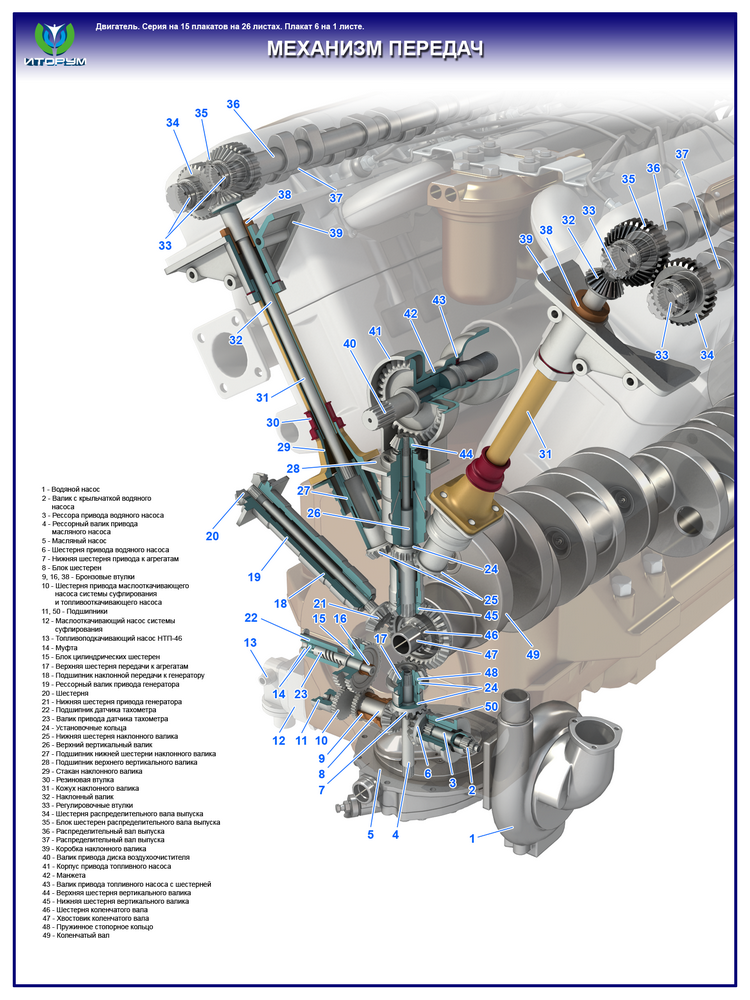
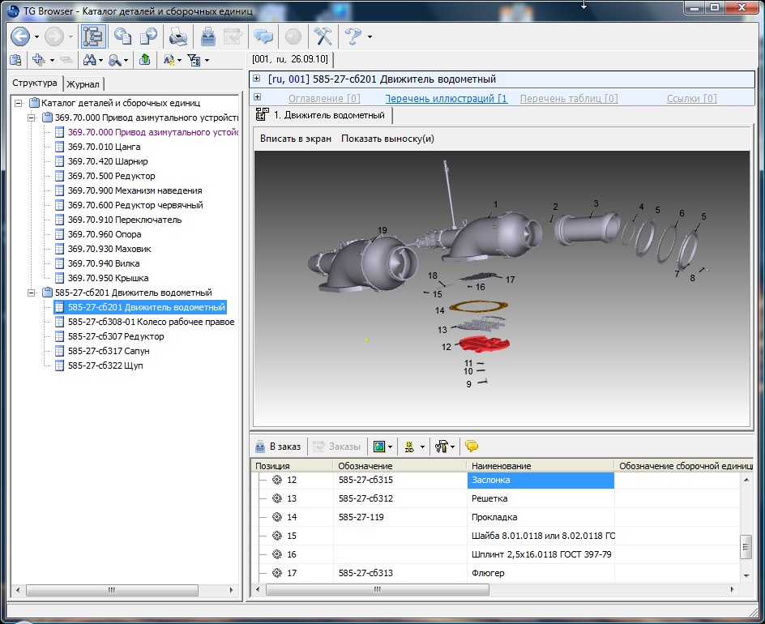
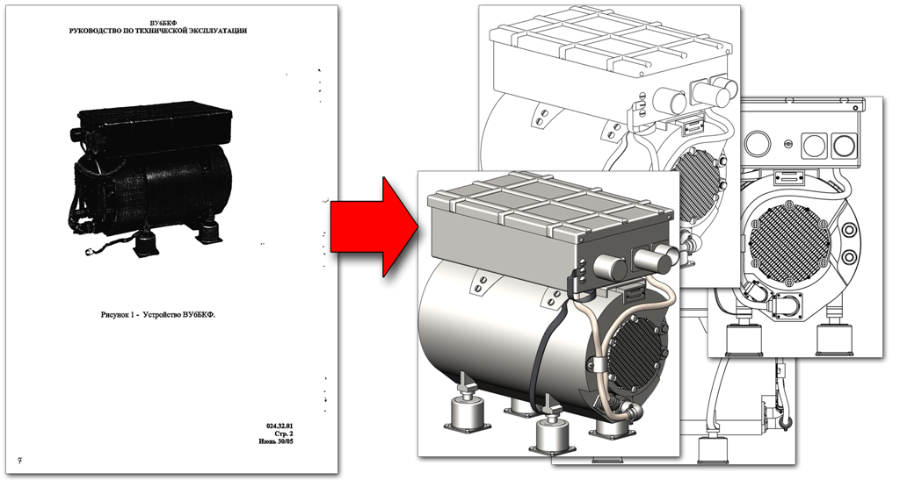

Autodesk Inventor Publisher
Inventor Publisher Technology
– это простое в использовании программное обеспечение для создания интерактивной трехмерной проектной документации с четкими и всеобъемлющими техническими инструкциями.Так сложилось, что в проектной документации традиционно доминируют 2D-руководства, полные запутанного и тяжелого для восприятия текста. Inventor Publisher Technology облегчает работу пользователя, создавая трехмерную документацию наподобие инструкций по использованию или справочников по ремонту и настройке, которые изобилуют иллюстрациями и просты в понимании.
С помощью Inventor Publisher Technology производители даже без какого-либо опыта в анимации могут запросто создавать подробные ролики и иллюстрации. Инструменты, разработанные специально для создания документов, действуя напрямую с данными САПР, автоматически формируют детальные виды и панорамы или ролики, демонстрирующие процесс с различных точек.
«Inventor Publisher помогает нам разрабатывать более четкие инструкции с впечатляющей трехмерной анимацией, – говорит Джон Клэй, инженер-конструктор компании ContiTech Beattie Ltd., ведущего поставщика специализированных систем для нефтегазовой отрасли. – С помощью этой программы мы можем облегчить работу пользователя и понизить вероятность эксплуатационных ошибок».
Документацию можно публиковать в различных форматах, включая *.swf, *.avi, *.dwf, *.ppt, *.pdf и другие распространенные типы файлов. Она может находиться в онлайн-доступе или распространяться с помощью электронной почты.
Предварительная версия Inventor Publisher Technology подходит и для производителей, и для пользователей. Как часть решения Autodesk для цифрового прототипирования Inventor Publisher предоставляет возможность получать данные для документации напрямую от цифрового прототипа, избавляя пользователей от лишней работы и неэффективности. И, поскольку процесс создания документации интегрирован с процессом проектирования, компании могут приступить к нему быстрее, снизив временные затраты на вывод своей продукции на рынок.
Seamatica-ED
Редактор Seamatica-ED предназначен для создания интерактивных электронных технических руководств (ИЭТР) различных классов и эксплуатационной документации. В основу разработки документации в Seamatica-ED положена технология, базирующаяся на международном стандарте S1000D.
Seamatica-ED позволяет быстро и просто создавать профессиональные электронные руководства с использованием следующих интерактивных элементов:
- Интерактивные иллюстрации с активными зонами в форматах растровой (PNG, GIF, JPEG), векторной (SVG) и 3-х мерной (VRML) графики;
- Встроенные в документ мультимедийные ролики;
- Гиперссылки между текстовыми фрагментами, интерактивными иллюстрациями и активными зонами иллюстраций;
- Интерактивное содержание для быстрого перехода между разделами руководства и функция поиска.
- Интерактивные руководства, созданные в Seamatica-ED, можно записывать на любые электронные носители информации или просматривать через Интернет с помощью стандартных браузеров: Microsoft Internet Explorer (в ОС Windows) и Mozilla Firefox (в ОС Linux, Unix, QNX, МСВС и других).
Система шаблонов публикации, позволяет получать в Seamatica-ED технические и эксплуатационные документы для вывода на печать, оформленные в соответствии с требуемыми стандартами.
В состав поставки редактора включены шаблоны и макеты эксплуатационных документов для технических изделий и программного обеспечения, в том числе документов по ЕСКД и ЕСПД.
PTC Arbortext
Arbortext – семейство продуктов, предназначенное для автоматизированного создания и публикации технической документации. Arbortext использует принцип единого источника, основанного на использовании формата XML при разработке документов.
Применение системы Arbortext позволяет предприятиям достичь существенных преимуществ:
- улучшить документальное авторское сопровождение по выпускаемым изделиям или предоставляемым услугам;
- снизить затраты на создание, перевод и распространение информационных материалов по сопровождению выпускаемых изделий или предоставляемых услуг;
- сократить в целом время предоставления выпускаемых изделий или предоставляемых услуг на рынке.
Высокая степень интегрированности продуктов Arbortext c другими продуктами PTC обеспечивает разработку документации в единой среде разработки, позволяющей не только создавать XML-документы, но и хранить документацию, создавать интерактивные иллюстрации, организовывать параллельную работу по созданию документации нескольким участникам процесса, возможно, удалённым друг от друга, в то время как большинство других средств – замкнутые решения для локального автора.
3DVIA Composer
3DVIA Composer
позволяет быстрее обновлять и превращать существующие 3D-данные проектирования в высококачественную отчетную документацию, включающую тексты, технические иллюстрации, анимации и интерактивные 3D-опыты.Благодаря потенциалу 3D-технологий, вы обеспечите клиентов, партнеров и коллег более ясной и понятной информацией о продукции, существенно повышая их способность усваивать сложные данные.
3DVIA Composer позволяет также создавать отчетную документацию на более ранних стадиях проектирования, ускоряя тем самым выпуск новой продукции на рынок и сокращая затраты, связанные с внесением изменений.
Это простое в использовании приложение представляет собой идеальное дополнение к привычным инструментам Microsoft Office, PDF и HTML.
Technical Guide Builder

Technical Guide Builder
— интегрированный комплекс программных средств для разработки, сопровождения, изменений и публикации эксплуатационной документации на сложные изделия.Идеологической основой TGB является самая современная международная спецификация S1000D©, разработанная Европейской ассоциацией аэрокосмической и оборонной техники (AeroSpace and Defense Industries Associations of Europe — ASD) и регламентирующая все вопросы, связанные с разработкой, сопровождением и передачей эксплуатационной документации (ЭД) в электронной и бумажной форме при решении задач интегрированной логистической поддержки (ИЛП).
Одной из главных идей S1000D является представление ЭД в виде набора информационных единиц — модулей данных (МД) в формате SGML/XML. Состав и структура данных в МД определена стандартом S1000D, что позволяет рассматривать каждый модуль данных как потенциальный электронный документ. В состав TGB входит база данных МД, а также средства администрирования, позволяющие формировать из хранимых в базе данных МД требуемые публикации, в т.ч. на разных языках, управлять изменениями МД и публикаций, осуществлять контроль целостности и корректности хранимых данных.
Для подготовки разных видов ЭД (описательной, процедурно-технологической, каталогов и т.д.) в TGB предусмотерн набор специализированных программных приложений-редакторов. Использование высокоуровневых приложений позволяет инженерному составу разрабатывать ЭД, концентрируя свое внимание только на содержательной части ЭД, и не требует от пользователя глубоких знаний языков SGML/XML, что характерно при использовании имеющихся на рынке XML-редакторов.
Результат работы Technical Guide Builder:
- интерактивные электронные технические руководства (ИЭТР) различного класса
- бумажные публикации
- мультимедийный плакат
- анимация устройства оборудования
- анимация работы оборудования
- учебно-технический плакат: 
- Сборочные модели: 
- Переработка существующей документации: 
Установить TGBrowser и попробовать сборочную модель в TGB.
Для корректной работы TGBrowser необходимо установитьDeepView